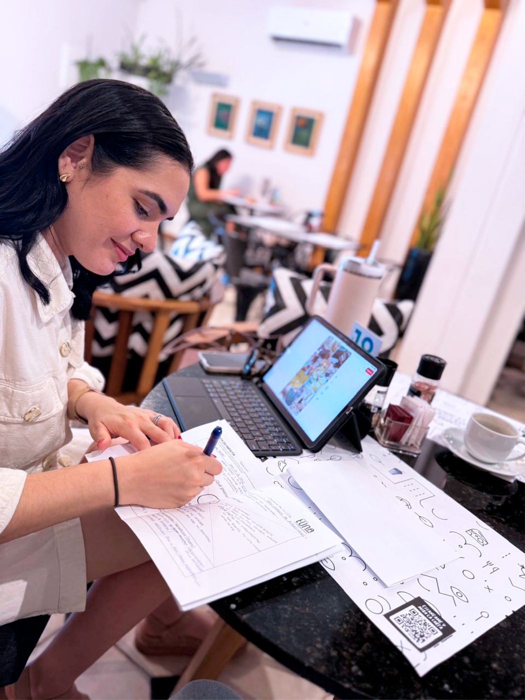
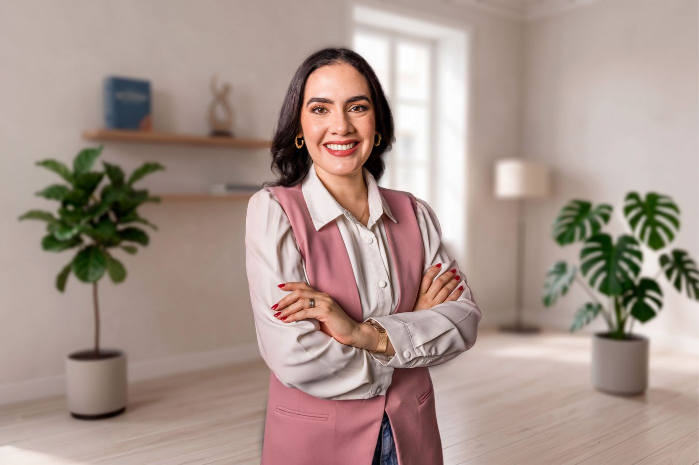

Años enseñando idiomas y traduciendo documentos, hechos experiencia para vos.
Solicitar experiencia →Por qué existe Wanderlust
Wanderlust nace de años de experiencia enseñando idiomas y traduciendo documentos. Y de entender, en la práctica, qué es lo que realmente ayuda a avanzar.
El Método
No se trata solo de traducir palabras, sino de encontrar la solución idiomática correcta para cada documento y cada contexto. Con el Método Wanderlust, cada traducción parte de un diagnóstico real: qué necesitás decir, y cómo decirlo bien.

Por qué deberías confiar en nosotros
- Traductora pública matriculada, registrada en la Corte Suprema de Justicia
- Lic. en Lengua Alemana (UNA) y Lic. en Lengua Inglesa (UEP)
- Formación en Alemania: becas del Goethe Institut (Berlín) y la DAAD (Kassel)
- Años de experiencia en documentos legales, médicos y trámites migratorios

Hola, soy Lau.
Mi historia con el alemán empezó en la adolescencia, durante un intercambio escolar de un año en Austria. Ahí entré en contacto con el idioma por primera vez — y me enamoré de él. Al volver, decidí estudiar la Licenciatura en Lengua Alemana en el Instituto Superior de Lenguas (UNA), para seguir perfeccionando lo que había empezado a aprender en Austria.
Al terminar la carrera, la vida me dio la oportunidad de volver a Europa: primero a Berlín, en 2016, con una beca del Goethe Institut. Un año después, otra beca — esta vez de la DAAD (Servicio Académico de Intercambio Alemán) — me llevó a estudiar en Kassel. Cada viaje sumó algo distinto a mi forma de enseñar y de traducir.
Enseño idiomas desde 2014. Desde 2018 trabajo también como traductora pública, matriculada y registrada en la Corte Suprema de Justicia — lo que me habilita legalmente para ejercer como traductora e intérprete en todo el territorio nacional. En el camino, sumé también la Licenciatura en Lengua Inglesa con énfasis en Educación Bilingüe (UEP, 2024) y numerosos cursos de didáctica para seguir mejorando cómo enseño.
Trabajé con jóvenes y adultos de todas las profesiones, y traduje documentos para personas que necesitaban que su trámite avanzara — sin errores y sin demoras. Wanderlust es el resultado de todo ese camino: un espacio donde la experiencia real se pone al servicio de lo que vos necesitás lograr.
¿Te interesan las clases?
Por el momento nuestros esfuerzos están enfocados en traducciones, pero si querés que te avisemos cuando volvamos a abrir cupos para clases, dejanos tu contacto.
Anotarme en la lista de espera →Traducciones Certificadas
Tu traducción, lista en 48 horas — con el respaldo de la experiencia.
Años de experiencia se traducen en tranquilidad: documentos correctamente redactados, con los requisitos legales que exige cada institución — sin errores, sin rechazos, a tiempo. Trabajamos con documentos legales, médicos y trámites migratorios. Alemán, inglés, francés, italiano y portugués.
Cómo funciona
Subí tu documento. Completá el formulario y adjuntá el archivo — no hace falta que entregues el original en mano.
Lo traducimos y certificamos. En 48 horas tenés tu traducción lista, con la validez legal que necesita tu trámite.
Te llega directo. Recibís la traducción por el medio que prefieras, lista para presentar donde corresponda.
Plazo y respaldo
Traductora pública matriculada, registrada en la Corte Suprema de Justicia — habilitada para ejercer como traductora e intérprete en todo el territorio nacional. Tu documento, en manos con respaldo oficial.